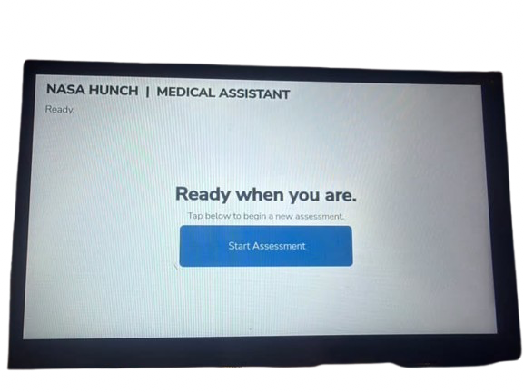

From symptoms to
an assessment.
A guided respiratory check-in turns symptom choices into a short, local assessment.
A guided check-in,
step by step.
Choose a respiratory symptom, follow focused choices, then review a possible explanation with local references.
- 01
Choose a profile
Start a local profile or select an existing one. Face matching is an experimental profile-selection option.
- 02
Choose respiratory symptoms
Pick a common symptom, then narrow it with follow-up choices. “Other” lets you type or speak instead.
- 03
Review the assessment
The local model considers the selected answers and relevant reference excerpts. Its suggestions are possibilities, not diagnoses.
- 04
Review and follow protocol
The output is not a diagnosis. Follow onboard medical protocol for care decisions.

Enough context to make the answers useful.
Choice-based details, with an “Other” option.
Onset, pattern, and triggers.
Other symptoms, age, medications, and respiratory history.
Context in. Possible explanations out.
The model uses the completed symptom tree and intake with relevant local references. Its answer can be incomplete or mistaken; it is not a diagnosis.
AI-generated possibilities may be wrong or incomplete. Use the prototype's output as information for review, not as a confirmed diagnosis.